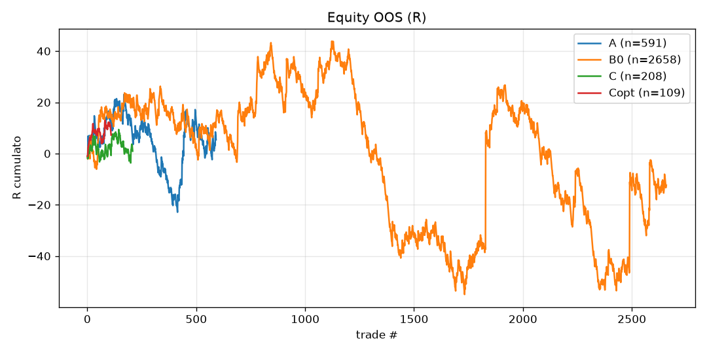
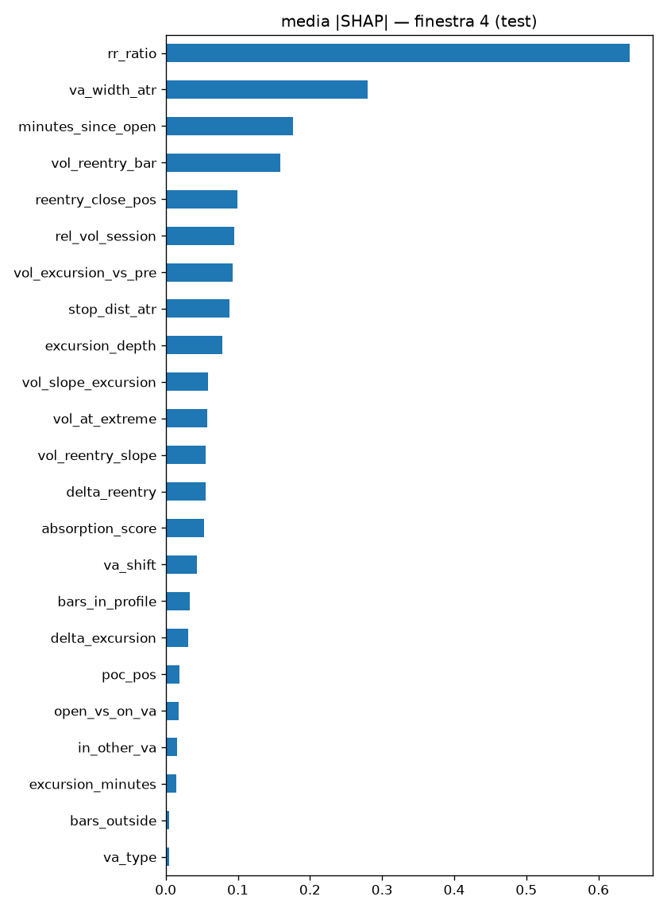
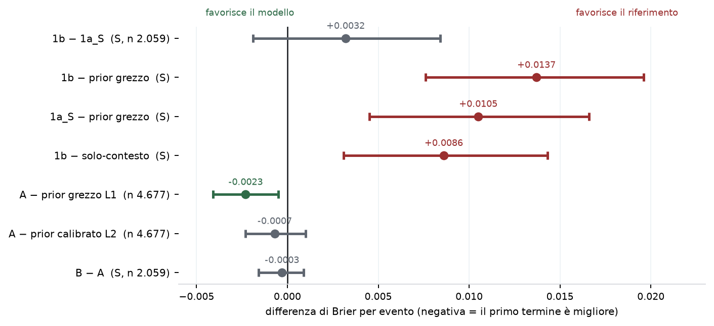
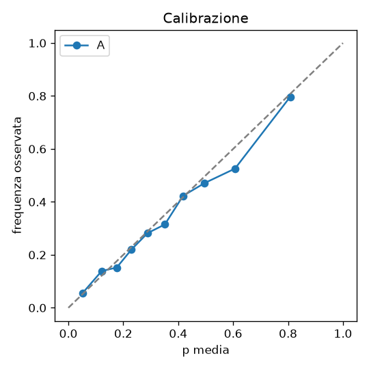
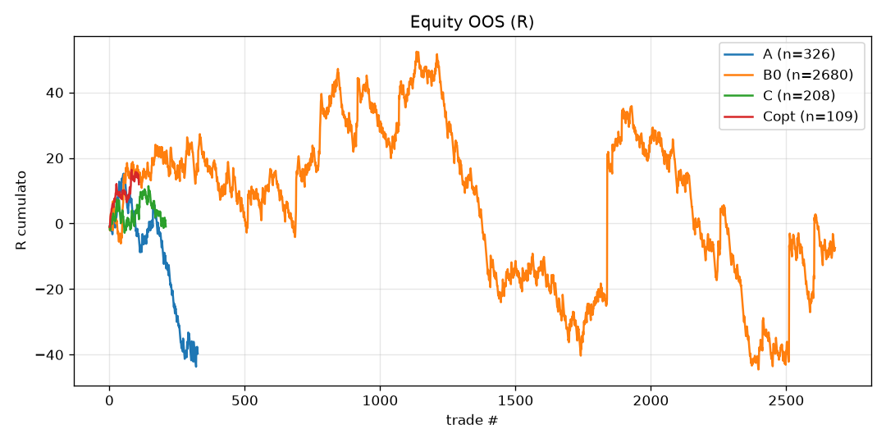
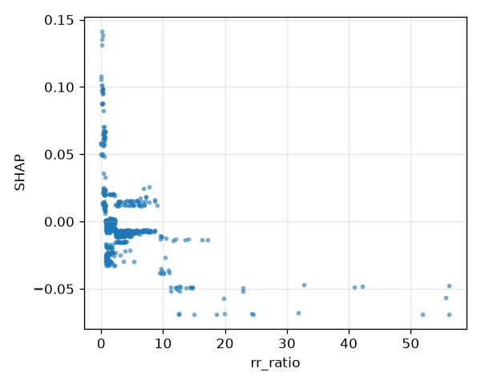

This study evaluates intraday trading signals on Nasdaq-100 futures using data spanning June 2010 to March 2026. An initial value-area study compares machine-learning selection with a calibrated geometric prior in three documented milestones. A subsequent laboratory evaluates 24 hypothesis families, logs 5,013 tests, and searches 480,181 automatically generated rules. The analysis identifies a time-stop labelling artefact, look-ahead bias in a placebo control, and outcome-dependent sampling. Correcting these defects changes the interpretation of several apparently positive findings. None of the tested directional strategies meets all confirmation criteria. The maximum real t-statistic in the automatic search is 4.18, compared with a median maximum of 4.01 across 700 placebo worlds (search-adjusted p = 0.31). The sole directional candidate passing validation changes from +12.06 to -2.59 net points per trade in confirmation; its 190-trade confirmation sample has only about 10% power against half the validation effect, so this outcome does not establish the absence of a smaller effect. Two volatility relationships persist across the laboratory time blocks: realized-variance persistence and the association between overnight and regular-session ranges. Directional predictability and volatility predictability are distinguished throughout. The contribution is a documented case study of measurement corrections, search controls, and power-aware interpretation, rather than a general claim that profitable trading signals do not exist. Public code, specifications, aggregate reports, and experiment ledgers accompany the paper; licensed market data are excluded.
AI disclosure: Claude (Anthropic) substantially assisted research design, code development, execution, analysis, drafting, and reviews in separate model sessions. Codex (OpenAI) assisted the publication adaptation, editorial clarification, and repository preparation. These model reviews are not independent human peer review. Giovanni Febo is the sole human author.
The date range 2023-10-02 to 2026-03-19 was evaluated in the original Part I walk-forward milestones (Tables 2-5 and Appendix A). Statements in the previous manuscript that this out-of-sample window was “never opened” referred only to the later exploratory branches in §11 whose proposed confirmation was not executed. They do not mean that these calendar dates had never been inspected anywhere in the project. Part II subsequently uses substantially the same dates as its confirmation block (starting 2023-10-01). Its controller limits access per candidate, but this is not a globally untouched holdout for the entire evolving project.
Part I and Part II are a sequence of related experiments on one instrument, not independent replications on new markets. Discovery-only follow-ups and the descriptive Expected Range evaluation (§17) must be distinguished from candidate-level confirmatory tests. All claims about an unopened vault concern the author's documented protocol status, not a third-party access audit. The original Part I specification used a vault end date of 2026-09-19; the later laboratory protocol and final closure use 2026-09-30. No vault data were accessed in this publication adaptation.
“Pre-registered” here means that the original local Git records document criteria committed before the relevant execution, with later amendments and looks disclosed. The public repository is a fresh publication snapshot, not the original full Git history and not an independently timestamped preregistration service. Original commit identifiers are provenance references, not public GitHub links or proof of an external timestamp. The paper therefore reports the author's documented chronology with this verification limit.
The strategy under examination is discretionary: the trader watches the session's volume profile, waits for price to leave the value area (the range containing 70% of the volume around the point of control), checks that the volume of the excursion dies out and that the order flow shows absorption, and trades the re-entry into the value area with a stop beyond the extreme of the excursion and a target at the opposite edge. The research question is not “does the strategy work?” but a narrower and verifiable one: is there, in the data observable at decision time, information that makes it possible to select the better setups beyond what the geometry of stop and target already says?
The distinction matters. A setup with a 20-point stop and a 40-point target has, in the absence of any other information, a success probability of about 1/(1 + 2) = 0.33 — the probability with which a random walk first touches the nearer level. Any model that “predicts” this quantity looks skilful (AUC ≈ 0.76) without knowing anything about the market. For this reason every milestone compares the model with the geometric prior prw = 1/(1 + rr), where rr is the ratio between target distance and stop distance, and, in the last milestone, with its calibrated version.
The preregistration rationale follows Nosek et al. (2018); multiple-test screening uses Benjamini and Hochberg (1995), with the assumptions and dependence limits discussed below. The work is organised in pre-registered milestones: success criteria, thresholds, windows and reading rules are written and committed before the out-of-sample results are observed, and observations are recorded in a ledger now included in the public snapshot. The protocol allowed three free “looks”; all three were used.
All data come from Databento, dataset GLBX.MDP3 (CME Globex), continuous symbol NQ.v.0. Purchase costs are reported because they determined the design of the tick sampling.
| Series | Schema | Period | Volume | Cost |
|---|---|---|---|---|
| 1-minute bars | ohlcv-1m | 2016-09-20 → 2026-09-19 | 121 monthly files | $12.81 |
| Tick trades | trades | 498 sampled days in 2021-09-20 → 2026-03-19 | 2,062 windows · 66,440 min · 62.66 M trades · 580 MB | $89.17 |
Table 1. Data sources. The tick cost was computed exactly with metadata.get_cost on every window and committed to the repository before the purchase (reports/1b_sampling.md).
Sessions. Regular trading hours 09:30–16:00 ET; overnight value area computed on 18:00–09:29 ET and held fixed; “developing” value area recomputed at every 5-minute close. Days with fewer than 300 RTH bars are excluded.
Tick sampling. The cost of trades for all excursion windows over the 4.5 usable years was estimated at $230, above the available credit. The protocol (§12-bis of the specification) therefore pre-registered a stratified sample: in each calendar month round(0.45 · n) valid days are drawn with a seed-0 generator, so that every walk-forward window and every year has the same share. Ticks are purchased only in the windows [break, re-entry) merged by day. Result: 498 days out of 1,119 (44.5%), from 4 to 10 per month (4 in the initial partial month, 6 in the final one, 8–10 elsewhere), with no empty months. The aggressor-side convention (A = sell, B = buy) was verified on the data: in 86.3% of the 52,434 one-minute bars with a move ≥ 2 points, B volume exceeds A when the bar rises. One day (2026-03-16) is flagged by the vendor as of degraded quality.
Four independent state machines (overnight / developing value area × long / short) follow each session on 5-minute bars: inside → broken (close beyond the edge) → event (close back inside). The excursion cannot last more than 90 minutes; the last entry is at 15:30 ET and open positions are closed at 15:55. The reference entry is the open of the one-minute bar following confirmation; the stop is the extreme of the excursion plus one tick beyond it (0.25 points), the target the opposite edge of the value area. The label is 1 if the target is touched before the stop (limit order), 0 otherwise; an open already beyond stop or target cancels the event (gap rule). Costs are applied afterwards: commission $2.50 per side, slippage of one tick (0.25 points, $5) per side on the entry and on every market exit; the target is a limit order. One NQ point is worth $20.
The detector produces 19,210 events in ten years (7.7 candidates per day), with median stop 20.75 points, median target 40.25 and median rr 1.92. In the usable training period (from 2021-09-20) there are 8,525 events; those in the five test windows number 4,677.
All features are computed with data available at the close of the re-entry bar; the context builder is truncated at that instant by construction, and an automated test verifies that no module reads the post-decision columns (entry_ts, entry_price). Features are symmetric between long and short (no “side” feature); a test mirrors a synthetic day and checks that the values are equal.
The classifier is binary LightGBM with monotone constraints on six features (among them rr decreasing, delta and absorption increasing), learning rate 0.03, feature fraction 0.7, grid over leaves {7, 15} × minimum observations per leaf {20, 50, 100}, early stopping at 100 rounds within 2,000, seed 0. In version 1a the validation set (last three months of training) serves both the grid and early stopping and the isotonic regression that calibrates the probabilities. The split into two temporal halves — first half for grid, selection and early stopping, second half for the calibrator alone — was introduced with 1b-S and applied to both paired runs (1a_S and 1b), with 96–127 and 93–112 events per half. In version 1c boosting starts from an offset: the initial function is not a constant but a · logit(prw) + b, with (a, b) estimated by logistic regression on the training data of each fold only (L2, the calibrated prior); there is no downstream calibrator and the whole validation set serves the grid and early stopping. An automated test verifies the nesting: with a single tree of zero contribution the model returns exactly L2.
where e is the close of the re-entry bar (entry_ref_price), the only price known at decision time; the backtest executes at the next open plus slippage.
An event is taken if the expected value in risk units exceeds a margin: EVR = p·rr − (1 − p) − costsR > 0.1. The baselines are B0 (all events), C (threshold rules: volume slope < 0 and re-entry volume > 1 times the average; from 1b also excursion delta > 0) and C-opt (thresholds optimised in-sample per fold, a non-executable upper bound). C is never used as a filter for the model. The engine trades one position at a time and discards duplicates.
Five consecutive six-month test windows (2023-10-02 → 2026-03-19), expanding training from 2021-09-20, one-day embargo, validation = last three months of training. The period 2026-03-20 → 2026-09-19 is a vault: never read in any milestone, reserved for a final verdict on request. The verdict of every milestone is on the aggregate of the five windows.
95% confidence intervals are obtained by day-block bootstrap (10,000 resamples, seed 0): whole days are resampled with replacement, so as to respect the correlation between events of the same day. Comparisons between versions are paired by event on the same identifiers: for the Brier score the per-event difference (pB − y)² − (pA − y)² and its event-weighted mean are computed, with the same day bootstrap. The expected half-width of these intervals is about 0.0026 of Brier with 4,677 events and about 0.005 with 2,059: this is the detection limit of the design.
Before any out-of-sample result was observed, the following were written: the five classic criteria (mean R > 0 with a CI excluding zero even at two ticks of slippage; superiority over B0, C and C-opt; positive sign of A − B0 in at least 4 windows out of 5; shuffle test in [0.45, 0.55] and Brier better than the context-only model; at least 300 trades), the paired criteria of 1b-S and the G1/P1/S1/G2 criteria of 1c with their declared power, the consequence trees and the forward-test primary. Every observation of the OOS is a row of oos_looks.md with the numbers copied from the report; the diagnostics done after the fact (rows 2-ter) are recorded as such, and the 1c design declares that it was chosen after seeing them.
On the 4,677 test events model A takes 591 trades with mean R 0.009 [−0.114, 0.135], profit factor 0.96, 14 negative months out of 30; at two ticks of slippage the mean R is −0.009. Criteria passed: 2 out of 5 (shuffle and number of trades). The finding that oriented what followed is in the Brier score: A 0.1820 (pooled), geometric prior 0.1820; AUC 0.7555 against 0.7569 for the prior. One-minute bars add no information beyond the stop/target geometry.

1a was re-run on the subset S of sampled days only (1a_S) and compared with 1b on the same 2,059 test events, same folds, same labels. Both runs use isotonic calibration on a separate validation half, pre-registered for 1b.
| Window | AUC 1a_S | AUC 1b | AUC prior | Brier 1a_S | Brier 1b | Brier prior |
|---|---|---|---|---|---|---|
| 2023-10 → 2024-03 | 0.7428 | 0.7121 | 0.7672 | 0.1902 | 0.1965 | 0.1825 |
| 2024-04 → 2024-09 | 0.7481 | 0.7752 | 0.7808 | 0.1906 | 0.1791 | 0.1783 |
| 2024-10 → 2025-03 | 0.7582 | 0.7489 | 0.7893 | 0.1905 | 0.1994 | 0.1709 |
| 2025-04 → 2025-09 | 0.7391 | 0.7353 | 0.7544 | 0.1927 | 0.2023 | 0.1803 |
| 2025-10 → 2026-03 | 0.7447 | 0.7425 | 0.7497 | 0.1731 | 0.1774 | 0.1760 |
| Pooled | 0.1881 | 0.1913 | 0.1777 |
Table 2. By window, on the 2,059 events of S. The zero-parameter prior has a higher AUC than both models in all five windows and a lower Brier in four out of five (in the fifth 1a_S scores 0.1731 against 0.1760 for the prior).
| Paired criterion | Statistic | Evidence | Outcome |
|---|---|---|---|
| (i) 1b beats 1a_S | per-event Brier, CI < 0 | +0.0032 [−0.0019, +0.0084] | FAIL |
| (ii) 1b beats the prior | per-event Brier, CI < 0 | +0.0137 [+0.0076, +0.0196] | FAIL |
| (iii) 1b returns more than 1a_S | mean R paired by day, CI > 0 | +0.007 [−0.117, +0.130] (410 vs 453 trades) | FAIL |
| (iv) sufficient trades | ≥ 300 · share = 134 | 410 | PASS |
Table 3. Pre-registered paired criteria (specification §12-bis). The decisions of the two versions overlap little (Jaccard 0.418: 307 common trades, 240 only 1a_S, 188 only 1b) with the same return.
The three core order-flow features are present in all folds by construction (they are core, they do not go through forward selection; among the exploratory tick features, delta_at_extreme enters in three folds, large_trade_share and large_trade_delta in one each) and did not help out of sample: in the SHAP plot of the last window they sit in the lower half of the 23 features, while rr dominates. The final review measured that 1a_S also loses against the prior with the same strength (+0.0105 [+0.0045, +0.0166]) and that about half of the gap is due to the isotonic calibrator estimated on 93–112 points per fold: the raw Brier before calibration is 0.1844 (1b) and 0.1803 (1a_S). Criterion (ii) is therefore true as written but is not evidence against order flow: it is evidence against calibration on little data. Under the pre-registered rule the remaining windows were not purchased.

A three-member review council decomposed, on the already recorded predictions, Brier(p) − Brier(prw) = V − 2C with V = E[(p − prw)²] (how far the model departs from the prior) and C = E[(p − prw)(y − prw)] (how far the departures point in the right direction).
| Prediction | V | C [95% CI] | Brier − prior |
|---|---|---|---|
| full 1a (4,677 events) | 0.0103 | +0.0051 [+0.0038, +0.0065] | −0.0000 |
| raw 1a_S (2,059) | 0.0112 | +0.0043 [+0.0020, +0.0065] | +0.0026 |
| raw 1b (2,059) | 0.0153 | +0.0043 [+0.0017, +0.0068] | +0.0067 |
| calibrated 1a_S / 1b | 0.0199 / 0.0228 | +0.0047 / +0.0046 | +0.0105 / +0.0137 |
Table 4. V − 2C decomposition. C is positive with an interval excluding zero everywhere: the departures from the prior are not pure noise, but they are worth about 0.002 of Brier. The increment due to the tick features has C = +0.0017 [−0.0001, +0.0035] and V +0.004: variance without covariance. Isotonic calibration doubles V without touching C.
The prior itself is optimistic: mean prw 0.378 against a base rate of 0.338. Correcting the intercept alone is worth −0.0017 of Brier, and a two-parameter logistic on the prior alone brings it to 0.1801 against 0.1820. Measuring C against that calibrated prior instead of the raw prior, it falls from +0.0051 to +0.0031 (1a) and from +0.0043 to +0.0024 (1b): about 40–45% of what looked like signal is recalibration of the geometry, not new information. An ensemble of the two versions (0.1805 raw, 0.1855 calibrated) does not beat the prior (0.1777). These measurements determined the design of the next milestone and are declared as such.
The design responds to the two measured defects: the model starts from the calibrated prior L2 (estimated per fold on the training data only: a = 1.08–1.11, b = −0.06 – −0.12) and has no downstream calibrator. Arm A uses the 15 core features on all events; arm B adds the 3 order-flow features; an arm A′ with seed 1 serves only guard G2. The primary is on the full set of 4,677 events, the only one with power for an effect of 0.001–0.002 of Brier (declared power 20–50%; declared expectation ≥ 70% of failure).
| Criterion | Statistic | n | Evidence | Outcome |
|---|---|---|---|---|
| G1 validity | Brier(A) − Brier(L1 raw prior) | 4,677 | −0.0023 [−0.0041, −0.0005] | valid |
| P1 primary | Brier(A) − Brier(L2 calibrated prior) | 4,677 | −0.0007 [−0.0023, +0.0010] · 99%: [−0.0028, +0.0015] | FAIL |
| S1 secondary | Brier(B) − Brier(A) on S | 2,059 | −0.0003 [−0.0016, +0.0009] | not read |
| G2 union | median |pB − pA| outside S ≤ 2 × median |pA − pA′| | 2,618 | 0.0100 ≤ 2 × 0.0079 | PASS |
Table 5. Pre-registered criteria of 1c (specification §12-ter). Pooled Brier: L1 0.1820 · L2 0.1804 · A 0.1797; on S: A 0.1751, B 0.1748. By rule, S1 is read only if P1 is at least “candidate”.
The pre-registered reading is: no detectable information beyond the calibrated geometry at this sample size; the declared falsifier (P1 estimate ≥ +0.0005) was not triggered; the forward test is not activated; L2 remains the reference model. The sanity check with shuffled labels, under the corrected null (see §5.3), gives mean AUCs of 0.475–0.523 per fold in both arms. Classic criterion 4, evaluated with the same paired bootstrap, gives Brier(A) − Brier(context-only) = +0.0011 [−0.0001, +0.0023]: even starting from the offset, the volume and geometry features do not beat the subset of context-only features, and are borderline worse. The five classic criteria give 1/5 for A and 1/5 for B. Descriptives: A takes 326 trades with mean R −0.122 [−0.267, +0.024], B 194 trades with −0.099 [−0.316, +0.133]; mean R B − A paired by day +0.023 [−0.160, +0.216]; Jaccard of A/B decisions 0.370, A/A′ 0.408. In the fourth window neither arm exceeds the expected-value margin: zero trades.




The three milestones compared the model with the geometric prior using, among others, a tool we here call the wall test: for a set of events one measures g = observed target frequency − mean of 1/(1 + rr). If g ≤ 0, no model can make that stop/target pair profitable, because selection can only choose among events whose average is already below the line.
The test has a systematic defect. The probability 1/(1 + rr) is that of touching the target before the stop with no time limit; the detector, however, closes every open position at 15:55, and that close was labelled 0, i.e. as a full loss of 1 R. Measured on the 13,603 events of the training period: 8.1% of events end at the time stop, and those exits are worth on average +0.605 R. The error is not random: it is always in the same direction and grows with the expected absorption time, i.e. it selectively penalises wide-stop geometries — precisely those that looked worst in the screening.
| quantity, value-area setup, training 2016-09 → 2023-09 | “time = −1” convention | mark-to-market |
|---|---|---|
| g (all events) | −0.0327 | −0.0065 (on absorbed events only) |
| EV without costs | −0.1501 R | −0.0195 R |
| value assigned to a time-stop exit | −1 R | +0.605 R (measured) |
Table 6. The size of the artefact. The conclusion “the setup lies below the random walk”, reported in version 1.1 of this report, depended entirely on the convention.
A first possible correction is to build a finite-horizon prior, i.e. the probability of touching the target within M minutes under a random walk with volatility σ. It is correct in principle but introduces σ as a nuisance parameter, and the sensitivity is high (a 10% change in σ shifts g by about 0.005).
The optional-stopping benchmark (Durrett, 2019) follows from the optional stopping theorem, under its integrability conditions. In a discrete-time integrable martingale and a bounded stopping time τ (here: the first of stop, target and 15:55 on the finite bar grid), E[Sτ] = S0, i.e.
regardless of geometry, horizon and volatility, provided the return is valued at the actual exit price — including time-stop exits, valued at the 15:55 close. The test therefore becomes: measure the mean gross return per event and compare it with zero, with a day-block confidence interval. The statistical price is a larger variance (per-event standard deviation 1.60 against about 1.2 for the old statistic, hence intervals 30% wider); the gain is a test that does not lie.
For non-symmetric strategies — those that always trade in the same direction — the null is not zero: under a martingale with drift μ, Wald's identity gives E[R] = u·μ·τ / runit. The drift must be estimated in a strictly retrospective way (252-session moving average of the segment, known before the event) so as not to use future information.
With the statistic of §5, on the training period (13,620 events, target filled only on a one-tick trade-through):
The setup is not below the random walk: it is above it, within the error. What makes it a loser is costs, which in risk units are worth about 0.75/s, with s the stop distance in points.
A positive gross expected value can arise from two opposite mechanisms: an event-conditional drift (price tends to move in the direction of the trade) or a symmetric microstructure effect (the nearer barrier is touched more often than Brownian motion predicts, to the benefit of anyone who puts the target there). They are distinguished with a mirror test: the measurement is repeated on a fictitious trade with the same entry, the opposite side and the same distances.
On the 3,914 events of the near-target band: original +0.0381 [+0.0119, +0.0640], mirror −0.0238 [−0.0503, +0.0017], hence microstructure +0.007 and drift +0.031 R. An independent replication with a second implementation gives drift +0.0378 [+0.0119, +0.0630] and microstructure +0.0019 [−0.0094, +0.0132]: the separation is clear-cut, the effect is directional.
The expected value is not uniform: it grows monotonically with the depth of the excursion preceding the re-entry.
| depth quintile (in ATR) | n | gross EV, points | gross EV, R | median rr |
|---|---|---|---|---|
| shallowest | 2,721 | −0.91 | −0.070 | 4.90 |
| 2nd | 2,720 | −0.25 | −0.013 | 2.82 |
| 3rd | 2,722 | +0.31 | +0.003 | 1.75 |
| 4th | 2,719 | +0.74 | +0.001 | 1.19 |
| deepest | 2,721 | +2.05 | +0.024 | 1.20 |
Table 7. Post hoc measurement, not pre-registered. The correlation between rr and depth is −0.07: they are two nearly independent gradients, not the same one in disguise.
A reading compatible with this shape adds two forces: a continuation of the break (against the trade, of roughly constant size) and a return towards the value area proportional to the displacement (in favour of the trade). The net drift is then about κ·depth − m, negative below a threshold and increasing beyond it: a deep break that fails is an exhausted break, a shallow one that re-enters is a break on pause. The strongest cell of the grid (high depth × medium rr) gives +0.090 R [+0.019, +0.159], but it is one of fifteen cells chosen after looking: it is a hypothesis to pre-register, not a result.
To check whether the problem was the specific setup or the class of strategies, nine intraday setups were defined, pre-registered and measured on the training period only with the statistic of §5: 15-minute opening range breakout, opening gap (fill and continuation), first-hour extremes, value area continuation, return to VWAP from 2σ, overnight hold, last-hour momentum, open outside the previous day's value area, plus the original setup. In total 53 confirmatory tests (plus 5 exploratory strata), with Benjamini-Hochberg false discovery rate control at q = 0.10, one-sided p, and a mandatory mirror test on every geometry.
No discovery. The lowest p is 0.0108, against a rank-1 threshold of 0.0019. The line of work is closed according to the condition set before observing the results.
Two observations are of general value. First: with the correct statistic the majority of geometries go from negative to positive (first hour 8 out of 8, value area continuation 7 out of 8, opening range 5 out of 8), but the count of signs does not exceed chance — with an internal correlation ≈ 0.75 between the geometries of the same candidate, “eight out of eight” is one coin toss repeated eight times, not eight independent tosses; the effectively independent trials are about 16, not 53. A table centred on zero looks more positive than one systematically shifted, without containing more.
Second: the apparently best candidate was the overnight hold, with four geometries out of four “discovered” and net return up to +0.107 R. It is an artefact of the null. The wall test assumes zero drift; a long-only strategy on an index that rose 19% a year over the period beats it by construction. The return decomposition confirms it: overnight +10.5% a year against intraday +8.5% — overnight captures 54.6% of the rise, not nearly all of it as in the anomaly documented in the literature — and in the sub-period 2021-10 → 2023-09 the sign reverses (Sharpe −0.43 against +0.47). With the Wald null corrected for the measured drift: zero geometries out of four, p = 1.000. The wall test is valid only for long/short symmetric setups, where the drift cancels out.
The result has a precise shape. Recalibrating the prior alone is worth 0.0016 of Brier with two parameters (L1 0.1820 → L2 0.1804): the raw prior is systematically optimistic and a logistic corrects it. G1 measures the sum of calibration and trees (−0.0023 [−0.0041, −0.0005]) and is therefore a validity check, not proof of skill. P1 isolates the contribution of the trees starting from the calibrated prior: estimate −0.0007, interval [−0.0023, +0.0010] — compatible with both a small gain and a small loss. Since the half-width of the paired difference is about 0.0026 (4,677 events) and 0.005 (2,059), no design on these data could detect an effect of the measured size: the honest conclusion is not “there is no information” but “there is no information detectable at this sample size”, and the pre-registered hypothesis predicted this outcome with probability ≥ 70%.
The most relevant defect found along the way is not in the features but in the procedure: an isotonic calibration on about 100 points per fold doubles the variance of the probabilities without improving their direction (Table 4). The order of magnitude of the damage (0.007–0.008 of Brier) is ten times larger than the effect the features could bring. 1c removes the calibrator and estimates the calibration on the 3,300–7,250 training events through the offset: it is the correct choice for problems with few events, and the only one that makes the comparison with the prior fair.
The third defect, described in §5, was found after the publication of version 1.1 of this report and required a complete re-measurement: the comparison tool was biased by construction. It must be said without mitigation: for three milestones a central conclusion was formulated with a wrong metric, and none of the pre-registered checks could detect it, because the defect lay in the comparison itself and not in the pipeline. This is why §10 of this report is an explicit retraction and not a footnote. The other two defects were intercepted before the results were read. (a) The clause requiring the per-event paired bootstrap for the comparison with the context-only model had been pre-registered since 21 September, before the execution of 1b; the first report, however, evaluated it by window average, and some static sentences inherited from 1a contradicted the numbers. The final review detected this and the correct computation was added in a declared re-render — hence after look 2, not before (look 2-bis): the verdicts did not change, the evidence did. (b) In 1c the shuffled-label test was defined with a fixed offset estimated on the true labels: trees trained on random labels learn to cancel the offset and their score becomes anticorrelated with the true label (on synthetic data mean AUC 0.19; on real data 0.22–0.27). The null was redefined with L2 refitted on the shuffled labels, and the amendment was committed before execution; the original variant is nevertheless reported. A check that can fail by construction checks nothing.
With the correct metric the operational picture changes in the details but not in substance. There is a measurable drift of about 2 points in the direction of the re-entry, concentrated in deep excursions, which decays quickly: +0.036 R entering at the open of the next bar, +0.023 with a one-minute delay (−35%), +0.009 with two (−76%). It is not a reading of the market, it is a reaction advantage; a human operator who takes half a minute has already lost half of it, and costs absorb the rest. It should also be noted that the economic verdict depends on the unit of measurement: the mean return in R (which weights each event by 1/s and presupposes constant-risk sizing) is +0.003 with an interval containing zero, whereas in dollars at a fixed contract size it is +30 per trade with an interval excluding it. On the setups as the mechanical detector finds them, the best predictor of the outcome remains the calibrated geometry of the trade; the mean return after costs of the trades chosen by the model is negative or indistinguishable from zero in every look (1a: 0.009 [−0.114, 0.135]; 1c: −0.122 [−0.267, +0.024]); the decision rule changes about half of the trades when the seed changes. There is no demonstrated edge and the pre-registered forward test is not activated. The judgement concerns the mechanised setup: the trader's discretionary component — which break “counts”, when absorption is convincing — is not encoded by the detector, and might contain the information that is missing here; but as long as it is not measurable it is not verifiable.
Written for version 3.0. The general conclusion, which includes the laboratory and the closing of the vault, is in §18.
Three pre-registered milestones find in the NQ value area setup no exploitable information beyond the calibrated geometric probability, and a screening of nine intraday setups with the correct tool produces no discovery in 53 tests. But the most useful conclusion of this work is not about markets: it is about measurement. A single labelling convention — assigning −1 R to time-stop exits — was enough to shift the expected value by 0.13 R per trade and to make a setup that lies above the random walk appear below it. The correct form follows from an elementary theorem (optional stopping) and requires no parameters; the mirror test separates drift and microstructure with two measurements; the Wald null avoids mistaking the rise of an index for skill. These three tools apply to any strategy with a time-based exit and are the main contribution of the work.
As for the author's setup, the conclusion of version 2.0 — “it contains a true direction of about 2 points, which costs almost entirely cancel” — does not survive the checks of §11. The fixed-horizon test, which uses neither stop nor target and therefore does not depend on any fill convention, gives intervals containing zero at 5, 15, 30, 60 minutes and at the close, in two non-overlapping periods. The setup is not statistically distinguished from the specified same-session, same-side control at the tested horizons. These intervals do not prove a precisely zero effect and do not exclude effects below the design's detection limit.
The later exploratory session produced two apparently positive results that were invalidated by sample-construction defects (§11). Together with the time-stop correction and the drift-adjusted null, these examples show why a positive estimate must be checked against the data-generating and selection procedure. Low power alone does not establish that a positive result is a defect.
Status of the later Part I branches. Their proposed confirmation was not executed after the stopping conditions were met. The 2023-2026 period had already been evaluated in the earlier milestones, as explained in Research chronology. The proposed branch-specific confirmation had estimated power 0.54 against the full exploratory effect and 0.08 against half that effect. Future hypotheses require a specified test, disclosure of all prior data exposure, and a power calculation before any new evaluation.
The code, the reports and the ledger make it possible to reproduce every figure from the same data; the vault remains closed under the final laboratory protocol (2026-03-20 to 2026-09-30). Any future hypothesis requires by rule a pre-registration written before execution, and already has the bar (L2), the test (paired P1) and the expected power.
Version 1.1 of this report, published on 22 September 2026, contained statements that the re-measurement of §5–§7 has refuted. They are listed here in full, as retraction practice requires.
Version 1.1 remains available in the document history. No number has been deleted: the wrong ones are marked as such.
Once the screening was closed, three questions remained: whether a geometry different from the one used by the trader would change the outcome; whether the entry moment chosen by the setup was worth anything compared with an arbitrary entry; and whether the phenomenon sought existed at all. The measurements that follow produced two positive results, both later found to be false. The path is reported in full because it is the most instructive part of the work: both errors were identified not by looking at the results, but by asking how the measurements were built.
All measurements in this section are exploratory and declared as such before execution: no confirmatory claim, no family of tests, no candidate authorised to advance. The proposed branch-specific confirmation was not executed; the same calendar dates had already been evaluated in the earlier milestones.
For an integrable martingale on the finite discrete-time grid, optional stopping gives zero expected gross mark-to-market return for bounded stop/target/time-exit rules. A fine map of the surface therefore answers a physical question: where the market deviates from the martingale. Stop and target were expressed in multiples of the ATR(14) on 5m bars of the previous day — {0.25 · 0.5 · 0.75 · 1 · 1.5 · 2 · 3} per side, 49 cells — on two non-overlapping historical panels: the training 2016-09-20 → 2023-09-30 (13,620 events, 1,755 days) and the extension 2010-06-07 → 2016-09-19 (12,031 events, 1,551 days).
The surface is negative in 49 cells out of 49 in the recent panel and in 44 out of 49 in the older one. No geometry in the grid makes the setup positive. A fine grid guarantees some false positives by construction, which is why nothing that follows can be promoted; but the total absence of positive cells does not require that caution.
On the diagonal (stop = target = d) the trade and its mirror share almost the same two price levels, so their outcomes should be opposite event by event and the common component — the average of the two, which we call micro — should be zero. It is not zero, and the decomposition says exactly why. Under the pre-registered conventions, the stop of one side triggers one tick before the target of the other, because the target requires a 1-tick trade-through while the stop fills on touch. There is therefore a one-tick band in which both sides lose.
The categories are exhaustive and two of them must contribute exactly zero: “both trades exit at the time stop” and “one wins, the other loses”. Measured: residual +0.00·100 in all 28 diagonal cells (7 values of d × 2 tie conventions × 2 panels). There is no asymmetry in the computation engine. All of the diagonal micro lies in the two remaining mechanical categories, and the closed-form prediction −d × (share of events in which both lose) reproduces the measurement to four or five decimal places: in the 2016-2023 panel with d = 0.25 ATR the share is 9.52% and the prediction −0.02380 against −0.02379 observed; in the 2010-2016 panel, 11.10% and −0.02775 against −0.02774.
What this allows us to say. On the diagonal, micro is entirely due to the fill rules: the 1-tick trade-through on the target and the convention that assigns to the stop the bars in which both levels are touched. Off the diagonal the decomposition was not performed, and this work does not claim what produces the surface there. A collateral fact is however available: micro is side-invariant by construction — swapping the trade with its mirror leaves it identical — so the measurement on entries taken at random in the same session, which gives practically equal values (−0.0350 against −0.0363 in the older panel, −0.0155 against −0.0170 in the recent one), says that the surface does not depend on the setup, without saying what it is made of.
In the same measurement the variance ratio of non-overlapping one-minute log returns within the session was computed. It is 0.966 · 0.971 · 0.966 · 0.966 at 5/15/30/60 minutes in the 2010-2016 panel and 1.010 · 0.958 · 0.935 · 0.928 in the 2016-2023 one: below one almost everywhere, i.e. mean reversion and not momentum.
To estimate how much the instant chosen by the setup is worth, the true entries were compared with entries taken at random in the same session, on the same side and with the same distances. The comparison gave +0.065 ATR in favour of the setup, and was reported as a measure of its timing contribution.
The review identified the defect from the description of the procedure alone, before seeing any number: the placebo copied the side decided at the time of the signal and applied it also to instants before the signal. The setup's side depends on which edge of the value area price has broken; applying it earlier means using future information. In addition the sample was conditioned on survival, because only the excursions that later re-entered exist.
The check split the ±60-minute placebo into two halves. Before the signal: −0.1318 (2010-2016) and −0.1288 (2016-2023). After the signal, where the side anticipates nothing: −0.0082 and −0.0064, against a setup at −0.0061 and −0.0056. The difference between the setup and a random entry free of look-ahead is +0.0021 and +0.0008 ATR. The whole “+0.065” lay in the half that looked into the future.
A test without barriers settled the question. Fixed-horizon returns in the direction of the trade, in ATR units, with no stop or target: the setup is worth −0.005 · −0.006 · −0.022 · −0.027 · −0.106 at 5, 15, 30, 60 minutes and at the close in the recent panel, and −0.004 · −0.005 · −0.004 · −0.012 · +0.024 in the older one, with confidence intervals containing zero at all five horizons in both periods. The setup does not separate from an arbitrary entry at any time scale.
The control group built for the previous test — called B2, entry as soon as a 5-minute close leaves the value area, side towards the value area, decided with only the data available at that instant — was designed to be worth zero. Instead it measured +0.1486 ATR at 60 minutes in training and +0.1531 in the extension, with intervals excluding zero and an agreement between the two periods that looked like the most solid fact of the entire session.
Before any further measurement, a duplication check showed that 100.0% of the 5,573 events of the “value area continuation” candidate, already screened in §7, are contained in B2 with the side reversed — by construction, because that candidate trades in the direction of the break and B2 in the opposite one. A contradiction followed: on the common events the two are mirror images and cannot both be positive.
The contradiction was resolved not by measuring, but by checking how the sample was built. B2 had not been measured on the declared population: the code sampled 3 × (number of value-area events of that day) candidates per day. It is a weighting that gives ten times more weight to days with many re-entries — i.e. to days on which price leaves the value area and comes back, which are exactly the days on which a trade towards the value area makes money. The sample was selected on the outcome it was supposed to measure.
| Population (gross at 60 minutes, ATR units) | 2016–2023 | 2010–2016 |
|---|---|---|
| A — proxy: 3 × events of the day, first bar included (seeds 1/2/3) | +0.1867 / +0.1782 / +0.1961 | +0.2121 / +0.2175 / +0.2136 |
| B — all candidates, unweighted, first bar included | −0.0637 [−0.1260, −0.0004] | +0.0048 [−0.0586, +0.0688] |
| C — declared population: all, first bar excluded | −0.0662 [−0.1368, +0.0029] | +0.0195 [−0.0500, +0.0896] |
| D — only the first bars of each break (the removed part) | −0.0528 [−0.1161, +0.0090] | −0.0583 [−0.1185, +0.0017] |
| events in B / days | 88,597 / 1,755 | 79,037 / 1,552 |
With the weighting removed, the result goes from +0.19 to −0.064 in the recent panel: a gap of 0.25 ATR produced by the weighting alone, with identical triggers. On the declared population the value is −0.0662 in training and +0.0195 in the extension, with intervals containing zero and opposite signs between the two periods. The three stopping conditions written in advance — deviation of more than 30% from the expected value, non-positive training, discordant periods — were all three triggered. The line of work was closed without purchasing the planned confirmation data.
The contradiction with the already screened candidate resolves itself. Row D measures the excluded part, i.e. the first bar of each break: it is worth −0.053 and −0.058 in the direction of the value area, hence +0.05 ATR in the direction of the break, consistently in both panels. It is a post hoc diagnostic on a candidate already tested and not found to be a discovery under false discovery rate control (§7), and it is not promoted to anything. It is nonetheless worth noting how small it is in operational terms: 0.05 ATR is about 0.8 points at the average ATR of the recent period, against 0.75 points of costs between commissions and one-tick-per-side slippage. Even if it were true, the net is about zero.
The two false positives were identified by an review in a separate AI-model session (Claude, in a separate conversation), whose objections were relayed by the author to the working session. The division of roles was constant and is worth making explicit, because it is the reason the errors emerged: the working session built, the reviewer checked, the author decided.
The reviewer never had access to the code or the data. In both cases it identified the defect from the description of the procedure alone, before seeing the numbers, and set down in writing the decision rules before the measurements were run — including, in the second case, the correct prediction of what would happen when the weighting was removed. Decisions on what to measure, what to buy and when to stop remained with the author.
The useful generalisation concerns not the models but the type of question. Neither error would have emerged by examining the results: both were plausible, with narrow intervals consistent across independent periods. They emerged from questions about the construction of the measurement — how the placebo's side is chosen, how many events per day enter the sample. In a regime where the effect sought is smaller than the standard error, a positive result is more likely a measurement defect than a phenomenon: the appropriate reaction is not confirmation, it is the search for the defect.
Once Part I was closed, the question was deliberately broadened: “try anything, until you find something real”. This is the design that produces guaranteed false positives — with enough attempts something always passes — and for this reason freedom was given to exploration, while credibility was placed entirely in the judgement. Five rules, all enforced by the code and not by good will:
| Block | Period | Who uses it |
|---|---|---|
| Discovery | 2010-06-07 → 2018-12-31 | family agents, freely |
| Validation | 2019-01-01 → 2023-09-30 | the controller only, once per candidate |
| Confirmation | 2023-10-01 → 2026-03-19 | the controller only, once, on the survivors |
| Vault | 2026-03-20 → 2026-09-30 | nobody; closed on 2026-10-07, never opened |
| Forward test | from 2026-10-01 | pre-registered tests only, each from its own date |
Table 12.1. Time blocks of the laboratory. Costs: $2.50 per side plus one tick per side, 0.75 points round trip; NQ is worth $20 per point. Returns spanning the night use roll-adjusted prices with the exact dates of the Databento symbology.
| Round | Content | Fam. | Tests | Candidates | Validated | Confirmed |
|---|---|---|---|---|---|---|
| 1 | open ideas (calendar, micro, sessions, volatility, ML…) | 8 | 2,699 | 13 (5 strategies, 8 regularities) | 3 regularities | 2 regularities |
| 2 | range, costs, execution, analogues, automated search, footprints | 6 | ~1,600 + 480,181 rules | 5 (1 strategy, 4 regularities) | 1 strategy, 2 regularities | 0 |
| 3 | adaptive rule selection | 1 | 255 + ~70,000 placebo pipelines | 0 | — | — |
| 4 | free external data (VXN, VIX, VVIX, SKEW, rates, dollar) | 2 | 378 | 2 regularities | 0 | — |
| 5 | an ICT/AMD model taken from a video | 1 | 49 | 0 | — | — |
| 6 | four external hypotheses (gamma, community statistics, Noise Area, Silver Bullet) | 4 | 13 primary | 0 | — | — |
| 7 | machine learning on volatility; volatility versus options | 2 | 2 primary + 2 not run | 0 | — | — |
Table 13.1. Seven rounds, 24 families. Each family delivers at most three frozen candidates; validation corrects for the number of candidates in the round (Bonferroni), confirmation for the number of survivors. Details in lab/PROTOCOLLO.md and in the reports lab/<famiglia>/REPORT.md.
The two regularities keep their size from one block to the next (ratio between blocks 0.8-1.2). They are known in the literature and say how much price will move, not where: with the future alone they cannot be cashed in.
A FAIL verdict says that an effect was not demonstrated, not that it does not exist. For every verdict of the controller, the minimum detectable effect with 80% power (MDE80) at the threshold used was computed from the already recorded bootstrap interval alone, and — for confirmation — the power against half the validation estimate, i.e. against the effect expected after the winner's curse measured in §14.3 (lab/potenza.py, lab/POTENZA.md; no new data, no new tests).
| Candidate | Validation | Confirmation [95% CI] | MDE80 | Power | Years | Reading |
|---|---|---|---|---|---|---|
| HAR versus 22-day average | 0.214 | 0.175 [0.128, 0.224] | 0.082 | 97% | 1.5 | confirmed |
| Night → day | 0.121 | 0.164 [0.124, 0.204] | 0.069 | 67% | 3.2 | confirmed |
| Band breakout (net points) | +12.06 | −2.59 [−15.77, +12.13] | 21.1 | 10% | 30 | undecidable |
| Slicing footprints | 0.024 | 0.010 [−0.009, 0.030] | 0.032 | 11% | 18 | undecidable |
| RTH → evening (regularity) | 1.70 | 2.50 [−1.29, 5.64] | 5.90 | 2% | 119 | undecidable |
Table 15.1. “Power” = probability of seeing the target, i.e. half the validation estimate. “Years” = years of data like those of the confirmation needed to see the target with 80% power. Normal approximation of the bootstrap interval: orders of magnitude, not new verdicts. The full table (27 verdicts) is in lab/POTENZA.md.
The correct reading of the most promising strategy changes: in confirmation the interval runs from −15.8 to +12.1 points over 190 trades and even contains the validation estimate. That block could neither promote it nor acquit it, and with a single instrument the question is not decidable on a human time scale (σ ≈ 100 points per trade, about 77 trades a year). The honest wording is “it did not hold up”, not “it was luck”. Hence a new protocol rule (lab/PROTOCOLLO.md §21): every pre-registration first declares a plausible effect and computes the MDE80 at Step 0; if the test cannot see it, it is not run.
Machine learning on direction had already been tried three times (Part I, family ml, family r3_adaptive) and was not repeated. Round 7 applied it to volatility, the only place where the laboratory found signal.
Forecast of the 5-95% quantiles of the log RTH range, walk-forward 2013-2018 within discovery (1,478 sessions). Reference B0: the band of the §17 indicator re-fitted on the past only. Added features: the previous day's VXN and a calendar of FOMC, CPI and employment releases from official sources (dates known months in advance). Power declared at Step 0: MDE80 equal to 0.66% of the loss, against a relevance threshold of 2%.
| Model | Pinball loss versus B0 | p (Holm) | Years + | Calibration | Outcome |
|---|---|---|---|---|---|
| M1 — linear quantile regression | +1.29% | 0.026 | 6/6 | 90% quantile at 87.4% | FAIL below the 2% threshold |
| M2 — quantile LightGBM | −3.20% | 0.9999 | 1/6 | 5% quantile at 9.1% | FAIL worse than the reference |
Table 16.1. Positive = model better than B0. The calendar carries real but small information (placebo with dates shifted within the same month: p 0.010 for M1, none for M2) and almost only on FOMC days, the only event that falls within the session: CPI and employment come out at 08:30 and their effect is already in the overnight range.
Within this sample and specification, the tree model underperforms the reference. Model variance and the approximately linear relationships are possible explanations; the comparison does not establish that trees cannot improve volatility forecasts in other designs.
The natural question: if today's volatility is predictable, does the price of the expiring at-the-money straddle already know it? Data bought for discovery only (Databento, definitions and trades with the best bid/ask of options on NQ futures, $15.22). Step 0 closed the family before the tests, under rules written beforehand: 53 usable Fridays against a minimum of 150, straddle spread between 7% and 25% of the mid price, MDE80 of the advantage equal to 32% of the price against a plausible effect of 5%. Before 2019 Nasdaq-100 volume went through NDX and QQQ, not through options on the future. The question remains open and is undecidable with these data; buying later data is not allowed, because they fall in the blocks already used.
An indicator that at 09:29 estimates the range of the regular session with a log-HAR plus the overnight range, with fixed coefficients estimated once on 2010-07 → 2023-09 and never re-estimated, evaluated on the 611 sessions of the confirmation block. It is a risk tool: it says how much, not where.
| Method (2023-10 → 2026-03) | R² (points) | Mean absolute error | Within open ± 1× forecast |
|---|---|---|---|
| Expected Range (HAR + night, fixed) | 0.378 | 89.2 points | 77.9% |
| 20-day average range | 0.132 | 102.9 points | 74.6% |
| ATR(14) × 0.803 | 0.202 | 100.4 points | 75.1% |
Table 17.1. Advantage over the baselines significant in the squared log loss (p ≈ 0.0001). Declared limitations: in the first quarter of 2026 (53 sessions) the indicator does not beat the baselines; on news days the outer band should be read as a minimum (worst underestimate 4.7×). The confirmation block had already been used by the laboratory: the truly virgin test is the forward test from 2026-10-01.
An auditor that grades a list of trades from A to F with the laboratory's tests (day bootstrap, Deflated Sharpe with the declared number of attempts, beta, placebo with the same structure, years, dependence on the best trades, decay, look-ahead audit). Before letting it judge others, its errors were measured on synthetic strategies whose truth is known (product/engine/CALIBRAZIONE.md, 200 repetitions per scenario).
| Scenario | Grade A or B |
|---|---|
| Random strategy, number of attempts declared honestly | 2.0% [0.8, 5.0] |
| Best of 20 random strategies, declares N = 1 | 57.0% [50.1, 63.7] |
| Best of 20 random strategies, declares N = 20 | 4.5% [2.4, 8.3] |
| True advantage of 0.13 σ per trade, 750 trades | 99% (recognised) |
| True advantage of 0.065 σ per trade, 750 trades | 55% (recognised) |
Table 17.2. False positives and power of the auditor. The auditor cannot see hidden attempts: whoever picks the best of many variants and declares N = 1 gets a grade that is worth nothing. The grade says so explicitly, and the report card states the minimum advantage that the supplied trades make it possible to see.
With one-minute bars, one instrument and assumed round-trip costs of 0.75 points, none of the directional strategies tested met all of the laboratory's confirmation criteria. This conclusion is limited to the tested hypotheses, measurement conventions, chronological reuse described above, and available statistical power. For several hypotheses, the data are inconclusive about smaller effects (§15). Two volatility relationships persist across the laboratory time blocks; neither establishes a directional trading edge. The tested quantile LightGBM specification did not improve the range reference. The 2010-2018 options sample was insufficient to determine whether forecast information could be monetized.
The contribution that remains is methodological and transferable: the correction of time-stop exits, the mirror test, the drift null, the calibration of the criteria on placebos, the look-ahead audit with a positive control, the ledger of every look and — new in this version — the power calculation before every test and the measurement of the error rates of whoever judges.
Final documented status. The author records the vault 2026-03-20 to 2026-09-30 as closed without evaluation on 2026-10-07. The forward protocol begins on 2026-10-01; only observations after each hypothesis's own preregistration qualify for its forward test. No forward-test outcome is reported here, and no new evaluation was performed for version 4.1.
The Part II ledger is in lab/ledger/: 5,013 rows, one per test looked at.
| # | Date | What changed | Recorded result |
|---|---|---|---|
| 1 | 2026-09-21 | first run of 1a | 2/5 criteria; mean R of A 0.009 [−0.114, 0.135] |
| 1-bis | 2026-09-21 | re-render with geometric prior, Sharpe on all days | verdicts unchanged; Brier A = prior 0.1820 |
| 2 | 2026-09-21 | 1b-S: order flow on 498 days ($89.17), rerun of 1a on S, calibration on a separate half | (i)(ii)(iii) FAIL, (iv) PASS; 1b − prior +0.0137 [+0.0076, +0.0196] |
| 2-bis | 2026-09-21 | re-render after the final review: paired clause c4, corrected texts, order-flow SHAP | verdicts unchanged; 1b − context +0.0086 [+0.0031, +0.0143]; 1a_S − prior +0.0105 [+0.0045, +0.0166] |
| 2-ter | 2026-09-21 | post hoc diagnostics of the council (V − 2C, Platt on the prior, ensemble) | C = +0.004/+0.005; Platt-prior 0.1801; ensemble 0.1805; “design #3 was chosen after these measurements” |
| 3 | 2026-09-22 | 1c: L2 offset, arms A/B/A′, exploratory features off; shuffle amended before the run | G1 −0.0023 valid; P1 −0.0007 [−0.0023, +0.0010] FAIL; S1 not read; G2 PASS |
| 3-bis | 2026-09-22 | re-render: fixed-offset shuffle reported, paired descriptives, explicit reading | verdicts unchanged; mean R B − A +0.023 [−0.160, +0.216]; Jaccard 0.370 |
| 3-ter | 2026-09-22 | declared post hoc diagnostic: deviation from the prior and EV by rr band | at the time: negative EV in 5 bands out of 5 — subsequently retracted (§10) |
| correction | 2026-09-23 | discovery of the time-stop artefact; mark-to-market gross EV | EV −0.011 R [−0.041, +0.020]: the setup lies on the wall, not below it |
| S1–S8 | 2026-09-22/23 | screening of eight setups with the defective metric | superseded by the redo; kept in the ledger |
| V2 | 2026-09-23 | complete redo with the correct statistic, 53 confirmatory tests, FDR q = 0.10 | zero discoveries; minimum p 0.0108 against threshold 0.0019 |
| Branch B | 2026-09-23 | extension 2010-06 → 2016-09 bought ($7.34) to decide whether the slope was structural | slope −0.0144 [−0.0471, +0.0181], negative in 3 years out of 7 against 8 out of 8: period artefact; the out-of-sample test is not run |
| Map | 2026-09-23 | exploratory: EV surface over 49 geometries in ATR units, two panels | negative in 49 cells out of 49 (recent) and 44 out of 49 (old) |
| Test A | 2026-09-23 | decomposition of micro on the diagonal and variance ratio | residual exactly 0 in 28 cells out of 28: no asymmetry in the engine; VR 0.93–0.97 |
| Test B/C | 2026-09-23 | placebo split before/after the signal; fixed-horizon returns without barriers | the “+0.065 of timing” was look-ahead: +0.0008; the setup does not separate at any horizon |
| Step 1 | 2026-09-23 | duplication check, definitions and events only | 100.0% of the “value area continuation” candidate contained, with side reversed, in the new one |
| Step 0 | 2026-09-23 | gross at 60 minutes on the declared population, both periods | from +0.19 (weighted sample) to −0.066 and +0.020: three stopping conditions out of three, line of work closed, confirmation not purchased |
| Item | Value |
|---|---|
| Specification | docs/superpowers/specs/2026-09-20-nq-value-area-ml-design.md (§11 criteria, §12-bis, §12-ter) |
| Pre-registration commits | 1b-S: 4f7ac9b (spec), e5e398e (sampling and cost) · 1c: 2432fef, amendment bbab385 (before run f12f9e3) |
| Generated reports | reports/oos_report_1a.md, oos_report_1a_S.md, oos_report_1b.md, oos_report_1c.md, oos_report_1c_A.md, oos_report_1c_B.md |
| Configuration hash (1c) | 2ee491362e71 |
| Bootstrap | 10,000 resamples by day, seed 0; 95% CI (and 99% for 1c) |
| Model | LightGBM 4.7, seed 0 (A′: 1), num_threads 1, deterministic; scikit-learn 1.9; pandas 3 |
| Data spending, Part I | $101.98 ($12.81 bars + $89.17 ticks); 2010-2016 extension $7.34 |
| Part II: code and rules | lab/core.py (the only gateway to the data), lab/controller.py, lab/PROTOCOLLO.md (§1-§23), lab/RISULTATI.md, verdicts in lab/verdicts/ |
| Part II: power and calibration | lab/potenza.py → lab/POTENZA.md; product/engine/calibrazione.py → CALIBRAZIONE.md |
| Round 7: commits | pre-registration 1b0cc0c; test code eeaaab3, c942f3b; outcomes 4f17faa, 8fa25f9 |
| Data spending, Part II | options on NQ futures 2010-2018: $15.22 (plus possibly $1.13 for an interrupted request) |
| Vault | 2026-03-20 → 2026-09-30, closed on 2026-10-07 (3a07983), never opened |
R: trade return in risk units (P&L divided by the stop distance in points times the point value), after costs. Brier: mean of (p − y)². AUC: area under the ROC curve. Geometric prior: eq. (1). L2: prior calibrated with a two-parameter logistic estimated on the fold's training data only. Day-block bootstrap: resampling of test days with replacement, all events of a day together. Paired comparison: per-event difference on the same identifiers. Look: every reading of the working OOS, recorded with its numbers. Vault: period never read.
Volume profile: the volume of each one-minute bar is distributed uniformly over the price levels from low to high in steps of 0.25; the point of control is the most traded level; the value area expands from the POC by adding the heaviest adjacent levels in pairs until it covers 70% of the volume. The overnight VA uses 18:00–09:29 ET and stays fixed; the developing VA is recomputed at every 5-minute close on the RTH bars up to that moment.
Label: the one-minute bars are walked from the entry; target touched first (limit order) → 1, stop first → 0; if the same bar contains both levels the stop is assumed (conservative) → 0; at the 15:55 time stop → 0; if the entry bar already opens beyond the stop or beyond the target the event was not entered (gap rule) and has zero P&L. “gap” and “no_bars” events remain in the event count but produce no trades.
Volume features: vol_slope_excursion is the closed-form OLS slope of the volumes of the excursion's one-minute bars, normalised; vol_at_extreme and vol_reentry_bar are volumes normalised on a 20-day baseline; the ATR is 14-period on 5-minute bars. Order flow: with “with” = aggressor in the direction of the break, delta = (Vagainst − Vwith)/(Vagainst + Vwith), NaN if the denominator is zero; the extreme zone is ±4 ticks around the extreme price; “large” trades are those above the 95th percentile of the window; all reading windows are restricted to [break, re-entry), that of the re-entry to the last 5 minutes.
Context-only model: LightGBM on the six features known before the excursion only (value area type, minutes since the open, bars in the profile, open relative to the overnight VA, stop distance in ATR, rr), trained with the same procedure as the full model. Forward selection: starting from the core features, each exploratory feature is added if it improves the validation Brier by at least 10−4, one at a time, in list order. C-opt: the thresholds of the C rules are searched on a fixed grid maximising the realised mean R on the fold's training data, with at least 50 trades. Criterion (iii) of 1b-S: for each day the realised R of the trades taken by each version are summed and days are resampled; the statistic is the difference of the per-trade means.
The public snapshot at https://github.com/tramitemarketing/NQ-ML includes research code, selected specifications, aggregate reports, experiment ledgers, and this manuscript. It excludes the original complete Git history, credentials, licensed market-data files, event-level trade exports, caches, and trained-model artifacts. Some historical paths in reports describe the original private workspace. See REPRODUCIBILITY.md and PROVENANCE.md for the scope and limits of this release.
Market data (one-minute bars, tick trades, and options from GLBX.MDP3) are licensed through Databento and are not redistributed. End-to-end reproduction requires appropriate data permissions, equivalent data preparation, and the original historical environment. Synthetic unit tests can be run without purchasing data; passing them is not an independent reproduction of the empirical conclusions. Historical purchase costs in Table 1 are not current price quotations. No empirical rerun was performed as part of version 4.1.
Working paper for research and education. The author's interest in the tested strategy is disclosed above. Publication adaptation adds no independent empirical verification and provides no investment recommendation.